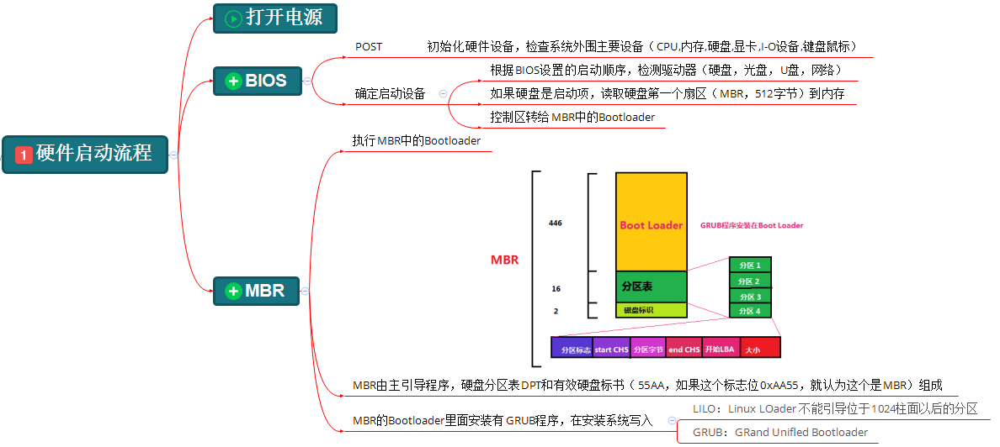

CentOS6启动流程（含详细流程图）

下面开始简单的了解一下CentOS6的启动流程吧。
第一步、硬件启动阶段

简单说一下这一步的流程：打开电源；POST自检；BIOS逐一排查设备启动顺序；如果是硬盘启动，读取硬盘的MBR的BootLoader。（这里默认MBR分区，暂不考虑GPT分区）
这里主要有三个需要了解的地方BIOS启动顺序、MBR和BootLoader。BIOS启动顺序大部分人应该都知道，我就不赘述了。
(1).MBR
MBR（Main Boot Record），是硬盘的0柱面，0磁道、1扇区（第一个扇区），称为主引导扇区，也称为主引导记录。它由三部分组成：主引导程序（BootLoader）、硬盘分区表DPT（Disk Partition table）和硬盘有效标志（55AA）。
注：硬盘默认一个扇区大小为512字节。
第一部分，主引导程序（BootLoader）占446个字节，负责从活动分区中装载，并运行系统引导程序。
第二部分，硬盘分区表DPT占64个字节，有4个分区表项，每个分区表项占16个字节，硬盘中分区有多少以及每一个分区的大小都记录在其中。
第三部分，硬盘有效标志，占2个字节，固定为55AA。如果这个标志位0xAA55，就认为这个是MBR。
(2).BootLoader
不同的系统有不同的主引导程序（BootLoader）。Windows使用的是NTLDR（NT Loader，Windows NT系列操作系统）、Bootmgr（Boot Manager，Windows Vista，7，8，10），Linux一般使用的是grub（也叫grub legacy）和grub2。
CentOS6一般使用的是grub。GRUB（GRand Unified Bootloader）是一个来自GNU项目的多操作系统启动程序。
第二步、GRUB引导阶段

简单说一下这一步的流程：GRUB程序加载执行并引导kernel（内核）程序，其中有三个阶段。
grub引导阶段的文件都在/boot/grub/目录下
(1).Stage1阶段
这一阶段其实执行的就是系统安装时预先写入到MBR的Bootloader程序。它的任务仅是读取（加载）硬盘的0柱面，0磁道，2扇区的内容（/boot/grub/stage1）并执行。
1 2 | [root@CentOS6 ~]# ll /boot/grub/stage1 -rw-r--r--. 1 root root 512 Mar 13 2018 /boot/grub/stage1 |
这一阶段，使硬件初始化，为Stage2准备RAM空间（内存空间），读取Stage2到RAM空间（应该涉及到了Stage1.5阶段）。就是Stage1.5阶段或Stage2阶段的入口，引导进入Stage1.5阶段或Stage2阶段。
另外，这一阶段并没有识别文件系统的能力。
(2).Stage1.5阶段
这一阶段是Stage1阶段和Stage2阶段的桥梁，具有识别分区文件系统的能力，此后grub程序便有能力去访问/boot/grub/stage2，并将其读取到内存执行。
1 2 3 4 5 6 7 8 | [root@CentOS6 ~]# ll -h /boot/grub/stage2 //大于512字节了-rw-r--r--. 1 root root 124K Mar 21 2018 /boot/grub/stage2[root@CentOS6 ~]# ls /boot/grub/*stage1_5 //有各种文件系统格式/boot/grub/e2fs_stage1_5 /boot/grub/minix_stage1_5/boot/grub/fat_stage1_5 /boot/grub/reiserfs_stage1_5/boot/grub/ffs_stage1_5 /boot/grub/ufs2_stage1_5/boot/grub/iso9660_stage1_5 /boot/grub/vstafs_stage1_5/boot/grub/jfs_stage1_5 /boot/grub/xfs_stage1_5 |
(3).Stage2阶段
这一阶段会（初始化本阶段需要用到的硬件，检测系统的内存映像，）解析grub的配置文件/boot/grub/grub.cnf，根据配置文件加载内核镜像到内存中，通过initrd程序建立虚拟根文件系统，最后调用（转交）内核
1 2 3 4 5 6 7 8 9 10 11 12 13 14 15 16 17 18 19 20 21 | [root@CentOS6 ~]# cat /boot/grub/grub.conf # grub.conf generated by anaconda## Note that you do not have to rerun grub after making changes to this file# NOTICE: You have a /boot partition. This means that# all kernel and initrd paths are relative to /boot/, eg.# root (hd0,0)# kernel /vmlinuz-version ro root=/dev/mapper/vg_centos6-lv_root# initrd /initrd-[generic-]version.img#boot=/dev/sdadefault=0 //设置默认启动项为第一个内核timeout=5 //菜单项等待选项时间为5秒splashimage=(hd0,0)/grub/splash.xpm.gz //菜单背景图片hiddenmenu //隐藏菜单//这里有时候会有passwrod参数，意思是进入急救模式（单用户模式）的密码是多少，可以是明文密码，可以是加密密码//例如password --md5 $1$1S9Xy$1MuGZSoPc2vAtkW.jvz0X/，这代表进入急救模式的password经过MD5加密，加密密码为$1$1S9Xy$1MuGZSoPc2vAtkW.jvz0X/title CentOS 6 (2.6.32-642.el6.x86_64) //菜单项名称 root (hd0,0) //grub查找stage2文件及kernel文件所在设备分区，grub的根。第一块硬盘的第一个分区 //启动的内核 kernel /vmlinuz-2.6.32-642.el6.x86_64 ro root=/dev/mapper/vg_centos6-lv_root rd_NO_LUKS rd_NO_MD rd_LVM_LV=vg_centos6/lv_swap crashkernel=128M LANG=zh_CN.UTF-8 rd_LVM_LV=vg_centos6/lv_root KEYBOARDTYPE=pc KEYTABLE=us rd_NO_DM rhgb quiet initrd /initramfs-2.6.32-642.el6.x86_64.img //内核匹配的ramfs文件，img是镜像文件 |
第三步、内核引导阶段

简单说一下这一步的流程：通过内存中的虚拟根文件系统，加载驱动，然后切换到真正的根文件系统，并执行/sbin/init程序。
第四步、init初始化阶段（又叫系统初始化阶段）

简单说一下这一步的流程：/sbin/init程序会读取/etc/inittab文件确认运行级别，然后执行/etc/rc.d/rc脚本，根据确认的运行级别启动对应/etc/rc.d/rc#.d/目录下的服务（#为0~6），与此同时执行系统初始化脚本/etc/rc.sysinit（软链接，指向/etc/rc.d/rc.sysinit），还会加载/etc/rc.local（软链接，指向/etc/rc.d/rc.local文件）用户自定义服务（脚本）。
这里有个有意思的地方，/etc/rc.d/目录下的文件几乎在上一次都有相应的软链接（也就是/etc/目录下），唯一没有的/etc/rc.d/init.d/目录又似乎与/etc/init.d/目录完全相同
1 2 3 4 5 6 7 8 9 10 11 12 13 14 15 16 | [root@CentOS6 ~]# ls -ld /etc/rc*lrwxrwxrwx. 1 root root 7 Mar 13 2018 /etc/rc -> rc.d/rclrwxrwxrwx. 1 root root 10 Mar 13 2018 /etc/rc0.d -> rc.d/rc0.dlrwxrwxrwx. 1 root root 10 Mar 13 2018 /etc/rc1.d -> rc.d/rc1.dlrwxrwxrwx. 1 root root 10 Mar 13 2018 /etc/rc2.d -> rc.d/rc2.dlrwxrwxrwx. 1 root root 10 Mar 13 2018 /etc/rc3.d -> rc.d/rc3.dlrwxrwxrwx. 1 root root 10 Mar 13 2018 /etc/rc4.d -> rc.d/rc4.dlrwxrwxrwx. 1 root root 10 Mar 13 2018 /etc/rc5.d -> rc.d/rc5.dlrwxrwxrwx. 1 root root 10 Mar 13 2018 /etc/rc6.d -> rc.d/rc6.ddrwxr-xr-x. 10 root root 4096 Feb 18 02:17 /etc/rc.dlrwxrwxrwx. 1 root root 13 Mar 13 2018 /etc/rc.local -> rc.d/rc.locallrwxrwxrwx. 1 root root 15 Mar 13 2018 /etc/rc.sysinit -> rc.d/rc.sysinit[root@CentOS6 ~]# ls /etc/rc.d/init.d rc0.d rc2.d rc4.d rc6.d rc.sysinitrc rc1.d rc3.d rc5.d rc.local[root@CentOS6 ~]# diff -ruNa /etc/rc.d/init.d/ /etc/init.d/ |
(1)./etc/inittab文件
1 2 3 4 5 6 7 8 9 10 11 12 13 14 15 16 17 18 19 20 21 22 23 24 25 26 27 | [root@CentOS6 ~]# cat /etc/inittab # inittab is only used by upstart for the default runlevel.## ADDING OTHER CONFIGURATION HERE WILL HAVE NO EFFECT ON YOUR SYSTEM.## System initialization is started by /etc/init/rcS.conf## Individual runlevels are started by /etc/init/rc.conf## Ctrl-Alt-Delete is handled by /etc/init/control-alt-delete.conf## Terminal gettys are handled by /etc/init/tty.conf and /etc/init/serial.conf,# with configuration in /etc/sysconfig/init.## For information on how to write upstart event handlers, or how# upstart works, see init(5), init(8), and initctl(8).## Default runlevel. The runlevels used are:# 0 - halt (Do NOT set initdefault to this)# 1 - Single user mode# 2 - Multiuser, without NFS (The same as 3, if you do not have networking)# 3 - Full multiuser mode# 4 - unused# 5 - X11# 6 - reboot (Do NOT set initdefault to this)# id:5:initdefault: |
这个文件直接看最后一行的那个数字就好了，我这里是5，就代表启动级别是5。
另外，还需要了解下系统的启动级别：
0 关机
1 单用户模式、维护模式、急救模式，都可以
2 多用户模式，但没有网络
3 完整的多用户模式
4 预留级别，暂时没用，不用考虑
5 图形界面，XWindows
6 重启
(2)./etc/rc.d/rc#.d/目录
在启动时执行的/etc/rc.d/rc脚本，会调用/etc/rc.d/rc#.d/目录下的文件
1 2 3 4 5 6 7 8 | [root@CentOS6 ~]# ls /etc/rc.d/rc5.d/K01smartd K50dnsmasq K73winbind K88sssd S01sysstat S12rsyslog S24nfslock S26udev-post S82abrt-ccppK02oddjobd K50xinetd K74ntpd K89netconsole S02lvm2-monitor S13cpuspeed S24rpcgssd S28autofs S82abrtdK05wdaemon K60nfs K75ntpdate K89rdisc S08ip6tables S13irqbalance S25blk-availability S50bluetooth S90crondK10psacct K61nfs-rdma K75quota_nld K92pppoe-server S08iptables S13rpcbind S25cups S50kdump S95atdK10saslauthd K69rpcsvcgssd K76ypbind K95firstboot S10network S15mdmonitor S25netfs S55sshd S99certmongerK15htcacheclean K71cgred K84wpa_supplicant K95rdma S11auditd S22messagebus S26acpid S70spice-vdagentd S99localK15httpd K72cgconfig K87restorecond K99rngd S11portreserve S23NetworkManager S26haldaemon S80postfix |
K开头的文件：要停止的服务（脚本），从01开始关闭，数字越小越优先关闭
S开头的文件：要启动的服务（脚本），从01开始启动，数字越小越优先启动
这些文件其实都是软链接，指向的都是/etc/rc.d/init.d/目录下的文件
1 2 | [root@CentOS6 ~]# ll /etc/rc.d/rc5.d/K01smartd lrwxrwxrwx. 1 root root 16 Mar 13 2018 /etc/rc.d/rc5.d/K01smartd -> ../init.d/smartd |
第五步、启动终端

最后一步就是用户登录了，没什么说的。